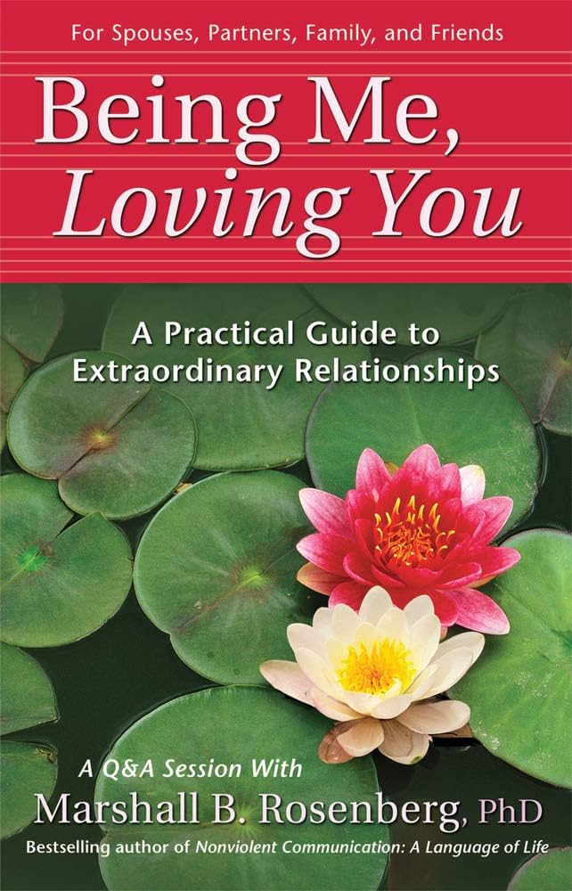
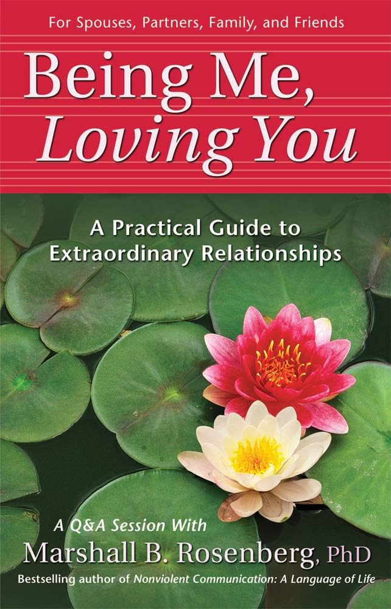

Nonviolent Communication
A language of life
How my life changed after NVC process?

Language
The reality buiding blocks
Symbols e Glyphs
"The unconscious is structured like a language"
Jacque Lacan
"The real value of a real education [has] almost nothing to do with knowledge, and everything to do with simple awareness"
David Foster Wallace
"We're trapped in linguistic constructs... all that is is metaphor"
Robert Anton Wilson
Propósito
Marshall Rosenberg
Founder and Director of Educational Services for the CNVC

Natural Giving
A way of communicating that leads us to give from the heart
"Giving something from our heart can enrich our life"
Life alienation
A communication that blocks compassion
WHO is WHAT?
Moralistic judgments
Who is bad, right, normal, abnormal, good, evil, ugly, pretty, smart, ignorant, etc...
Value X Moralistic
Honesty, freedom, peace, because these values reflect our beliefs.
We make moralistic judgments of people and behaviors that fail to support our value judgments
"Violence is bad, so people who kill others are evil"
"I am fearful of the use of violence to resolve conflicts; I value the resolution of human conflicts through other means."
Punishment X Reward
Comparisons are a form of judgment
Observing without evaluating
The separation of observation from evaluation
What are we observing others saying or doing that is either enriching or not enriching our life?
"When we combine observation with evaluation, people are apt to hear criticism."
Expressing Feelings
What is the feeling when we observe this action?
We were educated to neglect our feelings.
Expressing our vulnerability can help resolve conflicts
"What I feel... usually takes the place of: What I think..."
Connecting our feelings to our Needs
What needs are connected to our feelings?
I feel... because I need...
Needs can belong to any human, because all of us have the same needs
We mayprefer someone to meet our needs.
Requesting that which would enrich life
What would be a specific action that would meet our needs?
Making requests in clear, positive, concrete action language reveals what we really want
Requests X Demands
When the other person hears a demand from us, they see two options: submit or rebel.
Receiving empathically
Everything that the humans want to say is: please and thank you
Receiving empathically through the four components
- Guessing the needs
- Guessing the feeling
- Translating in a clear request
Sometimes what the people need is to know that their needs matter!
 

Questions? Anxieties? Perpexities? Dreams?